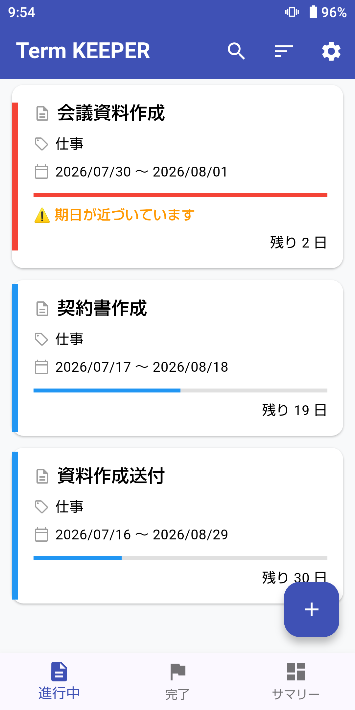
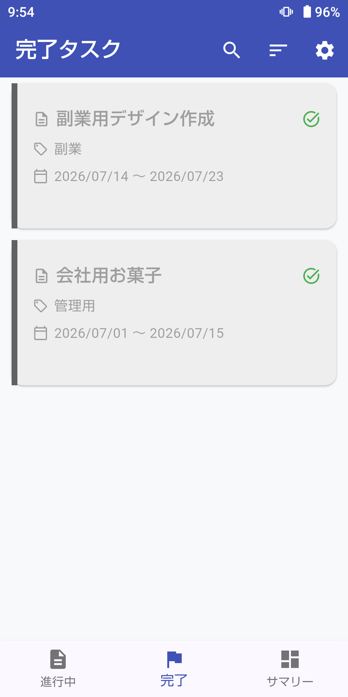
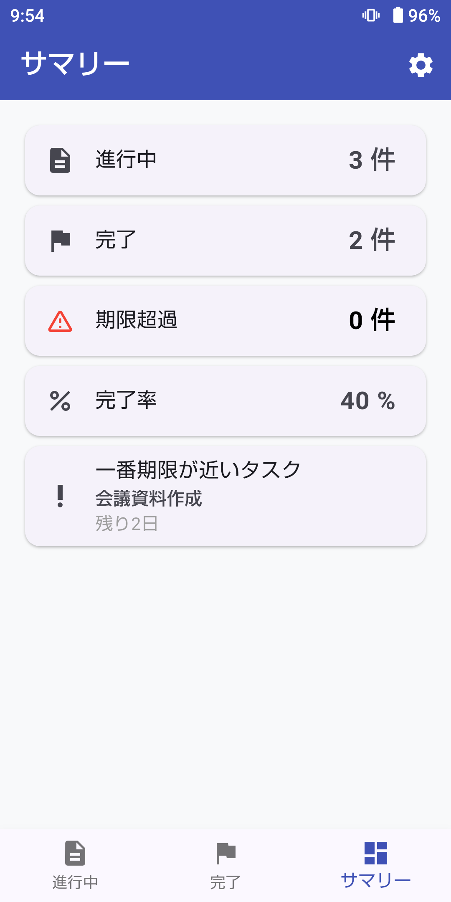
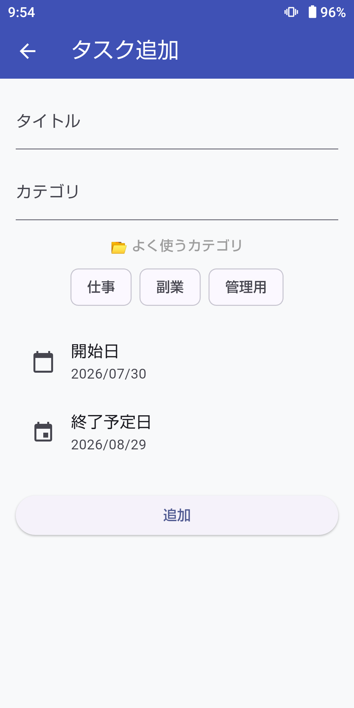
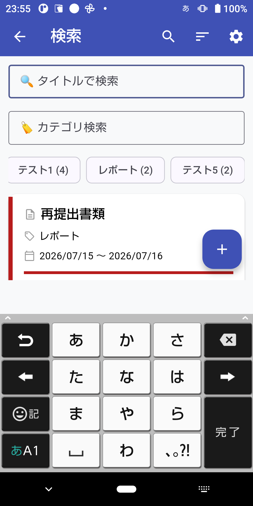

Next Do Thorough
ToDoをシンプルに管理するためのアプリです。
公開状況：製作中
アプリについて
Next Do Thorough は、ご自身が行っているToDoタスクをシンプルに管理するためのアプリです。
「お仕事」に役立てるほか、「ご趣味」の目標測定などを 少しだけ真面目にやってみたい方向けに作成しています。
『過去の自分が未来の自分を助ける』をコンセプトに、統計機能を実装予定です。
スクリーンショット





主な機能
- 進行中のタスク管理
- 完了タスクの管理
- 現時点での達成率
- サマリー管理
- 期限超過のお知らせ
- タスクのピン留め
ダウンロード
📝 更新履歴
・β版 クローズドテストを開始しました。
テスター参加いただける方はこちらからお願いします。プライバシーポリシー
Next Do Thorough のプライバシーポリシーはこちらからご確認いただけます。